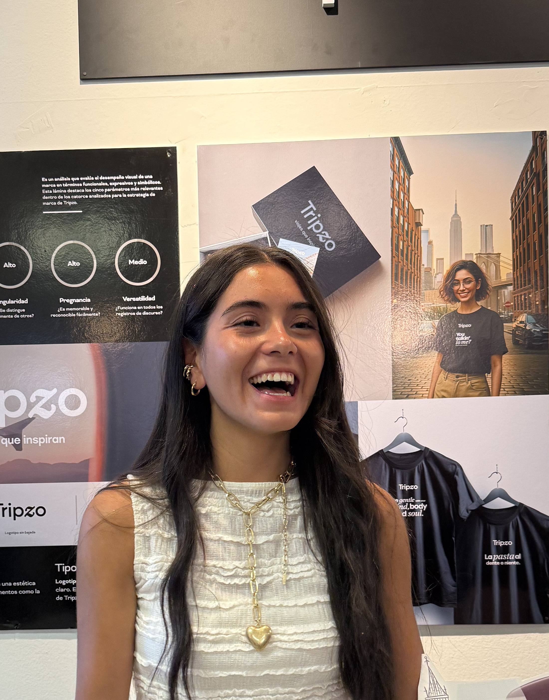

¡Hola!
Soy Lucía Mateo
BRANDING · COMUNICACIÓN VISUAL · MARKETING DIGITAL
Combino diseño y marketing para crear identidades, contenido y campañas con personalidad y estrategia.


De la estrategia
al sistema de marca.
Cuatro etapas para construir una identidad que funcione en cualquier contexto.
Investigar
Entender el negocio, su público y el contexto antes de proponer nada visual.
Estrategia
Definir posicionamiento, tono de voz y propuesta de valor de la marca.
Identidad visual
Construir una identidad de marca incluyendo los elementos que esta pueda requerir. (logo, mapa de color, puesta tipográfica)
Aplicaciones
Llevar la marca a piezas reales teniendo en cuenta posibles canales de comunicación (redes sociales, packaging, papelería, etc.).
Toolkit
Lo que uso a diario para llevar una marca del concepto a la pieza final.

Soy diseñadora de marca y comunicación visual, con base en Barcelona. Mi trabajo conecta el diseño con la estrategia: construyo identidades visuales, pero también pienso cómo esa marca se comunica y crece — desde una campaña en redes hasta la coordinación de un equipo creativo.
- Barcelona, España
- Lic. en Diseño Gráfico (mención en Identidad) — Universidad Champagnat
- Español (nativo) · Inglés (C1)
-
Co-fundadora & Diseñadora de Marca Koru Travel2024–2026
-
Diseño Gráfico Vectores, Agencia de Comunicación Digital2021–2023
-
Producción Gráfica Taller Gráfico Castilla2023–2024
¿Conectamos?
Actualmente estoy abierta a nuevas oportunidades en branding, diseño, comunicación visual y marketing digital.
luciamateodis4@gmail.com